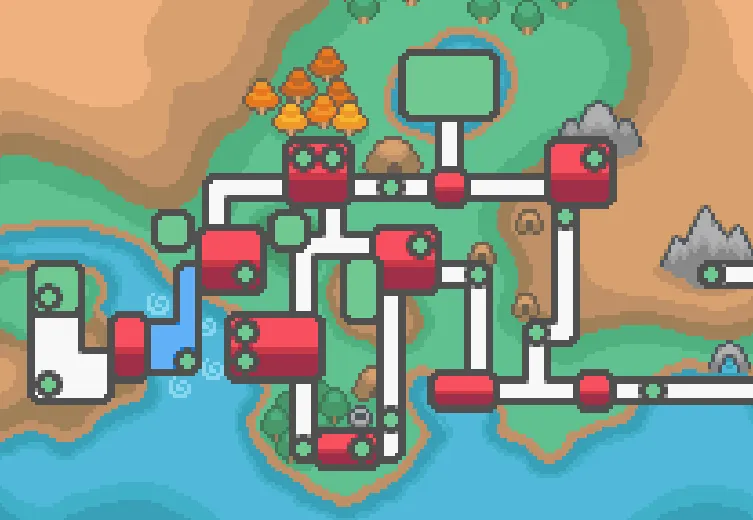

A região de Johto é o cenário principal dos jogos Pokémon Gold, Silver e Crystal, bem como dos remakes HeartGold e SoulSilver. Localizada a oeste de Kanto, Johto combina cidades históricas, vilarejos tranquilos, florestas e montanhas, oferecendo aos jogadores um mundo diversificado e cheio de aventuras. O ponto de partida é New Bark Town, onde os treinadores recebem seu primeiro Pokémon do Professor Elm — Chikorita, Cyndaquil ou Totodile — definindo a estratégia inicial para os ginásios e batalhas futuras. A cidade serve como base e introdução à mecânica de captura e treinamento de Pokémon. Johto é famosa por suas cidades únicas e ginásios desafiadores, como Violet City com Falkner, líder do tipo Voador, Azalea Town com Bugsy, especialista em Pokémon do tipo Inseto, e Goldenrod City, a maior cidade da região, com Whitney, líder de Pokémon do tipo Normal, e a Radio Tower, importante para a narrativa do jogo.
